用法：A型题点选项即判；X型题先多选、再点【判卷】；答完自动展开解析。刷完本课再过一遍底部【本课速记卡】，效果最好。
一、病理变化：变质为主15 题
A型·单选Q1P1 · 概述
病毒性肝炎的基本病理变化属于
答案与解析
答案：D
病毒性肝炎以肝细胞变性、坏死（变质）为主，渗出与增生为伴随表现，属变质性炎；同属变质性炎的还有乙脑、阿米巴病。
📖 讲义定位：P1 · 概述
A型·单选Q2P1 · 变质
肝细胞体积增大、胞质疏松化、呈气球样变，这种改变是
答案与解析
答案：C
肝细胞水肿/水样变性最常见（讲义口诀『水解脂肪酸』之『水』）：细胞体积增大、胞质/浆疏松化乃至气球样变。
📖 讲义定位：P1 · 变质
X型·多选Q3P1 · 变质
肝细胞变质（损伤性）改变包括
答案与解析
答案：BCD
讲义口诀『水解脂肪酸』——水（水肿）、解（溶解性坏死）、脂肪（脂肪变性）、酸（嗜酸性变和嗜酸性坏死）；淀粉样变性与此无关（A 错）。
📖 讲义定位：P1 · 变质
A型·单选Q4P1 · 溶解性坏死
肝小叶内一至数个肝细胞坏死、可完全再生修复的是
答案与解析
答案：A
点状坏死（旧称灶状/性坏死）：见于急性普通型肝炎、较轻的慢性（普通型）肝炎、酒精性肝炎等，能完全再生修复。
📖 讲义定位：P1 · 溶解性坏死
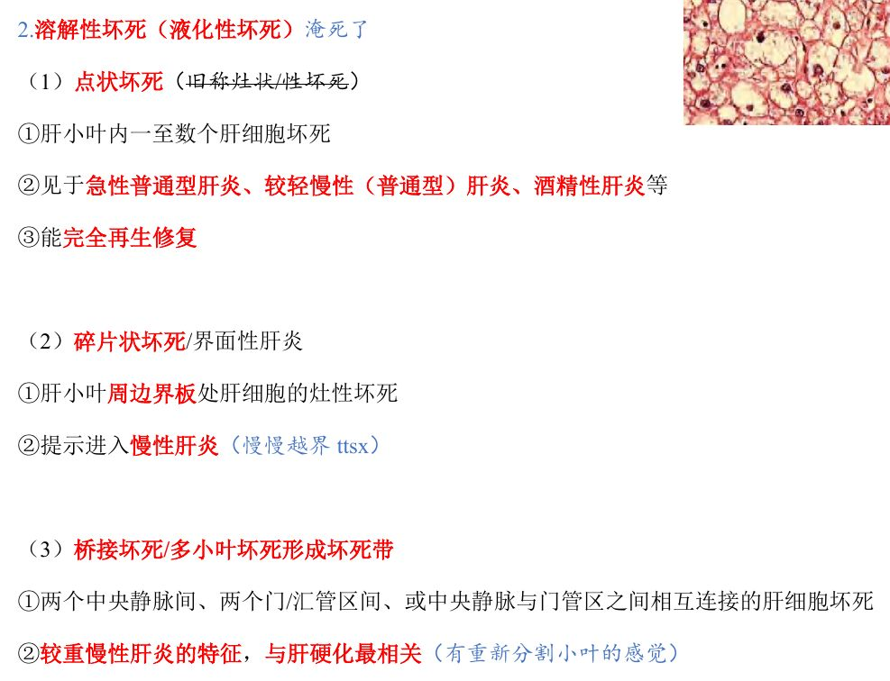
📷 讲义原图 · P1 · 溶解性坏死
A型·单选Q5P1 · 溶解性坏死
肝小叶周边界板处肝细胞的灶性坏死，称为
答案与解析
答案：B
碎片状坏死＝界面性肝炎：小叶周边界板处肝细胞灶性坏死，提示进入慢性肝炎。
📖 讲义定位：P1 · 溶解性坏死
A型·单选Q6P1–2 · 溶解性坏死
两个中央静脉间、两个门管区间、或中央静脉与门管区之间相互连接的肝细胞坏死带是
答案与解析
答案：B
桥接坏死/多小叶坏死形成坏死带：较重慢性肝炎的特征，与肝硬化最相关（有『重新分割小叶』的感觉）。
📖 讲义定位：P1–2 · 溶解性坏死
A型·单选Q7P2 · 溶解性坏死
坏死的范围占肝实质 1/2～2/3 时，称为
答案与解析
答案：D
＞2/3（或累及整个肝小叶）为大块坏死；两者均致网状纤维支架塌陷，见于重型肝炎。
📖 讲义定位：P2 · 溶解性坏死
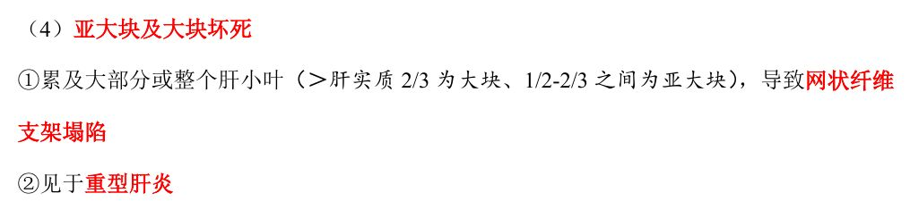
📷 讲义原图 · P2 · 溶解性坏死
A型·单选Q8P2 · 嗜酸性变
肝细胞的嗜酸性坏死（形成嗜酸性小体/Councilman body）本质上属于
答案与解析
答案：A
嗜酸性变→嗜酸性坏死＝凋亡，形成嗜酸性小体（Councilman body）。
📖 讲义定位：P2 · 嗜酸性变
A型·单选Q9P2 · 脂肪变性
病毒性肝炎的肝细胞脂肪变性最多见于
答案与解析
答案：C
脂肪变性最多见于丙肝、丁肝；肝细胞胞质出现球形脂滴（空泡或苏丹Ⅲ阳性）。
📖 讲义定位：P2 · 脂肪变性
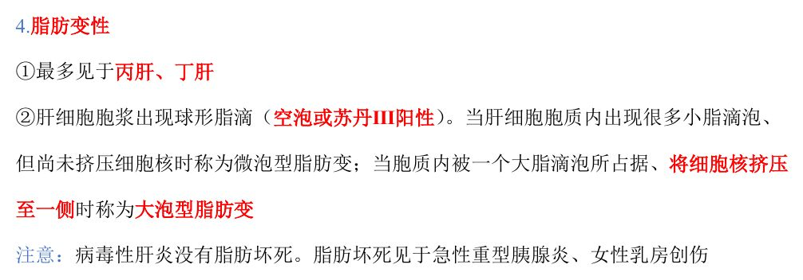
📷 讲义原图 · P2 · 脂肪变性
A型·单选Q10P2 · 脂肪变性
肝细胞胞质内被一个大脂滴占据、细胞核被挤压至一侧，称为
答案与解析
答案：C
小脂滴多、尚未挤压核＝微泡型；一个大脂滴、核被挤至一侧＝大泡型。
📖 讲义定位：P2 · 脂肪变性
A型·单选Q11P2 · 脂肪变性
关于脂肪坏死，下列叙述正确的是
答案与解析
答案：B
讲义特别提示：病毒性肝炎没有脂肪坏死；脂肪坏死见于急性重型胰腺炎、女性乳房创伤。
📖 讲义定位：P2 · 脂肪变性
A型·单选Q12P2 · 渗出
病毒性肝炎时肝内浸润的炎细胞主要为
答案与解析
答案：A
渗出以淋巴细胞和单核细胞浸润为主（讲义记法『林丹』）。
📖 讲义定位：P2 · 渗出
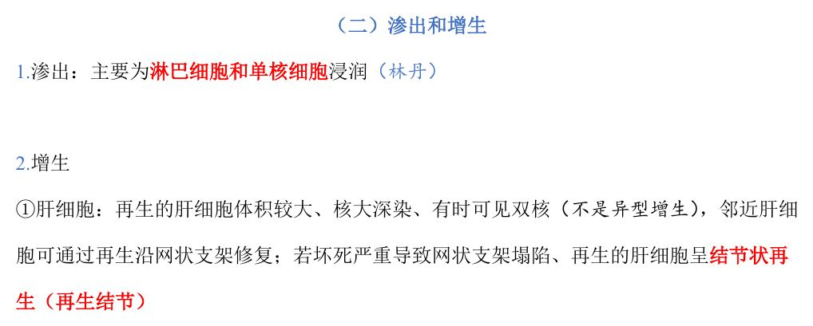
📷 讲义原图 · P2 · 渗出
A型·单选Q13P2 · 增生
病毒性肝炎时再生的肝细胞体积较大、核大深染、有时可见双核，该表现应判断为
答案与解析
答案：D
这是再生，不是异型增生；邻近肝细胞可沿网状支架修复；若坏死严重致网状支架塌陷，再生的肝细胞呈结节状再生（再生结节）。
📖 讲义定位：P2 · 增生
A型·单选Q14P3 · 增生
合成胶原纤维（纤维化）、被认为是导致肝硬化最重要的细胞是
答案与解析
答案：D
肝星状/贮脂细胞是合成胶原纤维（纤维化）的主要细胞，是导致肝硬化最重要的细胞。
📖 讲义定位：P3 · 增生
X型·多选Q15P2–3 · 增生
关于病毒性肝炎的增生性改变，下列叙述正确的有
答案与解析
答案：ACD
增生包括：肝细胞、Kupffer 细胞、成纤维细胞、肝星状/贮脂细胞、血管与小胆管等（B 错）。
📖 讲义定位：P2–3 · 增生
二、临床病理类型7 题
A型·单选Q16P3 · 急性普通型肝炎
急性普通型肝炎的典型病变是
答案与解析
答案：C
急性普通型（最常见）：肝肿大、广泛水样变性（气球样变等）、轻微点状坏死、嗜酸性坏死/凋亡（讲义口诀『水一点』）。
📖 讲义定位：P3 · 急性普通型肝炎
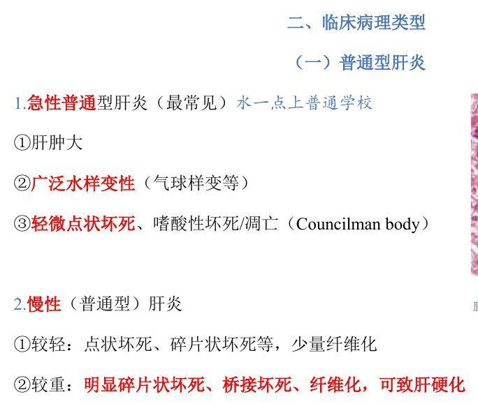
📷 讲义原图 · P3 · 急性普通型肝炎
A型·单选Q17P3 · 慢性（普通型）肝炎
慢性普通型肝炎病变较重时，最具特征的坏死类型是
答案与解析
答案：B
较轻者：点状坏死、碎片状坏死等＋少量纤维化；较重者：明显碎片状坏死、桥接坏死＋纤维化，可致肝硬化。
📖 讲义定位：P3 · 慢性（普通型）肝炎
A型·单选Q18P3 · 急性重型肝炎
急性重型肝炎肝脏的大体特点是
答案与解析
答案：A
黄＝脂肪代谢；红＝肝血窦明显扩张充血出血。镜下为大块坏死、网状支架塌陷，仅小叶周边残留少许变性肝细胞（无明显再生）。
📖 讲义定位：P3 · 急性重型肝炎
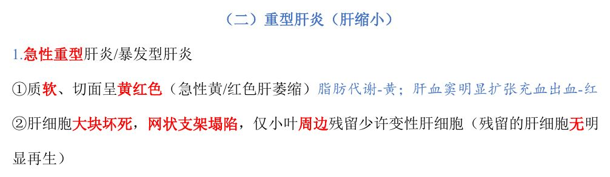
📷 讲义原图 · P3 · 急性重型肝炎
A型·单选Q19P3 · 急性重型肝炎
急性重型肝炎中残留的少量肝细胞多位于
答案与解析
答案：C
仅小叶周边残留少许变性肝细胞；且残留的肝细胞无明显再生。
📖 讲义定位：P3 · 急性重型肝炎
A型·单选Q20P4 · 亚急性重型肝炎
亚急性重型肝炎切面呈黄绿色，其成因是
答案与解析
答案：A
切面黄绿色：黄＝脂肪代谢；绿＝纤维化致淤胆。
📖 讲义定位：P4 · 亚急性重型肝炎
X型·多选Q21P4 · 亚急性重型肝炎
亚急性重型肝炎的病理特点有
答案与解析
答案：ABC
亚急性重型：亚大块坏死、网状支架塌陷、肝细胞结节状再生、纤维化，可致肝硬化（D 错）。
📖 讲义定位：P4 · 亚急性重型肝炎
A型·单选Q22P3–4 · 重型肝炎
可发展为肝硬化的重型肝炎是
答案与解析
答案：B
亚急性重型：结节状再生＋纤维化→可致肝硬化；急性重型残留肝细胞无明显再生。
📖 讲义定位：P3–4 · 重型肝炎
三、各型肝炎12 题
X型·多选Q23P4 · 甲肝、戊肝
主要经消化道（粪口途径）传播的肝炎病毒有
答案与解析
答案：AC
甲、戊经消化道（粪口途径）传播（C、A 对）；乙、丙主要经血液等途径传播。
📖 讲义定位：P4 · 甲肝、戊肝
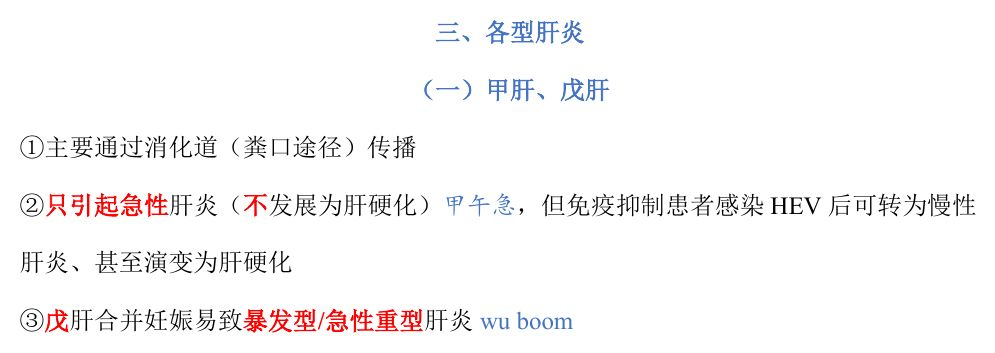
📷 讲义原图 · P4 · 甲肝、戊肝
A型·单选Q24P4 · 甲肝、戊肝
戊型肝炎的特殊之处是
答案与解析
答案：D
戊肝合并妊娠易致暴发型/急性重型肝炎；甲戊一般只引起急性肝炎。
📖 讲义定位：P4 · 甲肝、戊肝
A型·单选Q25P4 · 甲肝、戊肝
免疫抑制患者感染后可能转为慢性肝炎、甚至演变为肝硬化的病毒是
答案与解析
答案：B
讲义提示：甲戊只引起急性肝炎，但免疫抑制患者感染 HEV 后可转为慢性肝炎、甚至演变为肝硬化。
📖 讲义定位：P4 · 甲肝、戊肝
A型·单选Q26P4 · 乙肝
关于乙型肝炎病毒（HBV），下列叙述正确的是
答案与解析
答案：C
HBV 是 DNA 病毒（常见 DNA 病毒：HBV、EBV、HPV、疱疹病毒、巨细胞病毒）；可引起急性/慢性肝炎（病程＞6 个月、可发展为肝硬化）。
📖 讲义定位：P4 · 乙肝
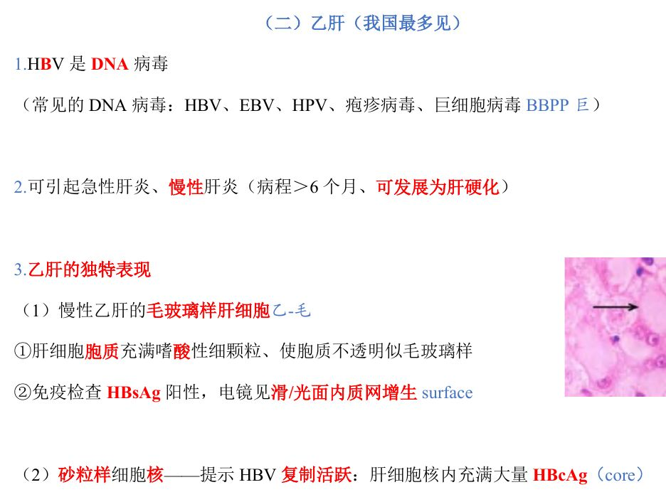
📷 讲义原图 · P4 · 乙肝
X型·多选Q27P4 · 乙肝
下列属于 DNA 病毒的有
答案与解析
答案：ABD
HBV、EBV、HPV（及疱疹病毒、巨细胞病毒）为 DNA 病毒；HCV 为 RNA 病毒（C 错）。
📖 讲义定位：P4 · 乙肝
A型·单选Q28P4 · 乙肝
慢性乙肝患者肝细胞胞质充满嗜酸性细颗粒、不透明似毛玻璃，该细胞提示
答案与解析
答案：A
毛玻璃样肝细胞：胞质充满嗜酸性细颗粒、不透明似毛玻璃；免疫检查 HBsAg 阳性，电镜见滑面内质网增生。
📖 讲义定位：P4 · 乙肝
X型·多选Q29P4 · 乙肝
毛玻璃样肝细胞的特点有
答案与解析
答案：BCD
A 错：不含淀粉样物质；其余为讲义原文特点。
📖 讲义定位：P4 · 乙肝
A型·单选Q30P4 · 乙肝
肝细胞核内充满大量 HBcAg、提示 HBV 复制活跃的改变是
答案与解析
答案：D
砂粒样细胞核——提示 HBV 复制活跃（核内充满大量 HBcAg）。
📖 讲义定位：P4 · 乙肝
A型·单选Q31P5 · 丙肝
最容易转为慢性肝炎、并极易演变为肝硬化的肝炎病毒是
答案与解析
答案：B
丙肝（欧美最多见）最容易慢性化；慢性肝炎的演变和预后主要取决于所感染的病毒类型。
📖 讲义定位：P5 · 丙肝
X型·多选Q32P5 · 丙肝
慢性丙型肝炎相对特异的镜下改变有
答案与解析
答案：ABC
慢性丙肝特点：脂肪变、门/汇管区淋巴滤泡、胆管损伤。注意：胆管损伤≠胆管增生，且胆管增生是基本病理变化之一（D 错）。
📖 讲义定位：P5 · 丙肝
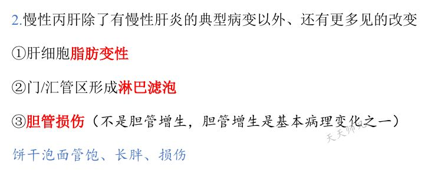
📷 讲义原图 · P5 · 丙肝
A型·单选Q33P5 · 丁肝
必须依赖 HBV 才能复制的肝炎病毒是
答案与解析
答案：A
丁肝（HDV）必须依赖 HBV 才能复制；可与 HBV 同时感染或在 HBV 携带者中重叠感染。
📖 讲义定位：P5 · 丁肝
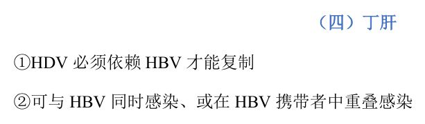
📷 讲义原图 · P5 · 丁肝
A型·单选Q34P5 · EBV 肝炎
肝窦内淋巴细胞和单核细胞聚集、呈列兵样排列（伴点状坏死和门管区炎症），其病原体是
答案与解析
答案：D
EB 病毒引起的肝炎：肝细胞点状坏死、门管区炎症，肝窦内淋巴细胞和单核细胞聚集，呈列兵样排列。
📖 讲义定位：P5 · EBV 肝炎
本课速记卡
变质：口诀『水解脂肪酸』
- 水：细胞水肿/水样变性——最常见，胞质疏松化、气球样变
- 解：溶解性坏死（液化性坏死）——点状/碎片状/桥接/亚大块及大块
- 脂肪：脂肪变性——最多见于丙肝、丁肝；微泡型（小脂滴、核未移位）／大泡型（大脂滴、核被挤至一侧）
- 酸：嗜酸性变与嗜酸性坏死——本质是凋亡，形成嗜酸性小体（Councilman body）
- 注意：病毒性肝炎没有脂肪坏死（脂肪坏死见于急性重型胰腺炎、女性乳房创伤）
四种溶解性坏死对照
| 类型 | 范围/部位 | 意义 |
|---|
| 点状坏死 | 小叶内一至数个肝细胞 | 可完全再生；见于急性普通型、较轻慢性、酒精性肝炎 |
| 碎片状坏死 | 小叶周边界板处灶性坏死 | ＝界面性肝炎，提示进入慢性肝炎 |
| 桥接坏死 | 中央-中央、门-门、门-中央相互连接 | 较重慢性肝炎特征；与肝硬化最相关 |
| 亚大块/大块 | 占肝实质 1/2～2/3／＞2/3 | 网状支架塌陷；见于重型肝炎 |
渗出与增生
- 渗出：主要为淋巴细胞和单核细胞浸润（讲义记法『林丹』）
- 肝细胞再生：体积较大、核大深染、可见双核——属再生，不是异型增生；支架塌陷时呈结节状再生（再生结节）
- 肝星状/贮脂细胞：合成胶原纤维（纤维化）的主要细胞，导致肝硬化最重要的细胞
- 此外 Kupffer 细胞、成纤维细胞、血管与小胆管均可增生
临床病理类型速记
- 急性普通型（最常见）：『水一点』——广泛水样变性＋轻微点状坏死（＋嗜酸性坏死/凋亡）
- 慢性普通型：较轻（点状、碎片状＋少量纤维化）／较重（明显碎片状、桥接坏死＋纤维化→肝硬化）
- 急性重型（暴发型）：质软、切面黄红色（急性黄/红色肝萎缩）；大块坏死、支架塌陷、仅小叶周边残留少许变性肝细胞（无明显再生）
- 亚急性重型：切面黄绿色（黄＝脂肪代谢；绿＝纤维化致淤胆）；亚大块坏死＋结节状再生＋纤维化→可致肝硬化
各型肝炎病毒要点
| 病毒 | 要点 |
|---|
| HAV／HEV | 粪口传播；一般只引起急性（免疫抑制者 HEV 可慢性）；戊肝＋妊娠易致暴发型 |
| HBV | DNA 病毒；可慢性（＞6 个月）；毛玻璃样肝细胞（HBsAg＋）／砂粒样核（HBcAg、复制活跃） |
| HCV | 欧美最多见；最易慢性化、极易肝硬化；慢性丙肝：脂肪变＋汇管区淋巴滤泡＋胆管损伤 |
| HDV | 必须依赖 HBV 才能复制 |
| EBV | 点状坏死、门管区炎症、肝窦内淋巴细胞单核细胞呈列兵样排列 |
📚 网站题库（导入）1 组 · 1 题
说明：本部分为外部题库导入（来源：「西综题库」网站 · 病理学），题干、选项与答案保留原样；标注「教师补充」的答案未经讲义逐项复核。做题方式：点字母选择（多选后点【判卷】；答案可点开「答案与出处」查看）。
慢性普通型病毒性肝炎的病理变化有多项选择教师补充
A 病毒性肝炎的病程持续3个月以上
B 该病的演变主要取决于病毒的类型
C 重者门管区见碎片状坏死和桥接坏死
D 慢性乙型肝炎者常见毛玻璃样肝细胞
网站题W1第2讲 · 第6页
慢性普通型病毒性肝炎的病理变化有(多选)
答案与出处
答案：BCD
📖 第2讲 · 第6页
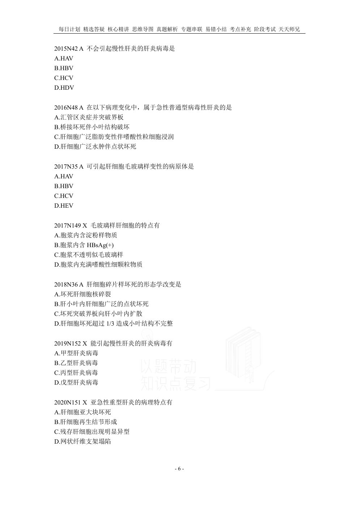
📷 讲义原图 · 第2讲 · 第6页
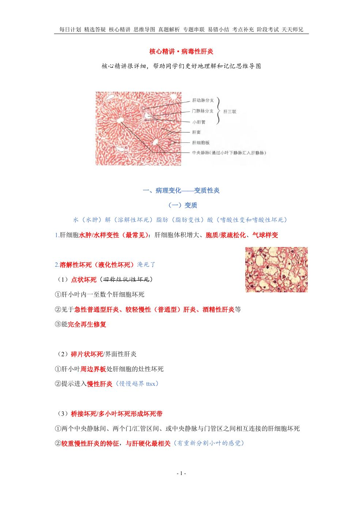
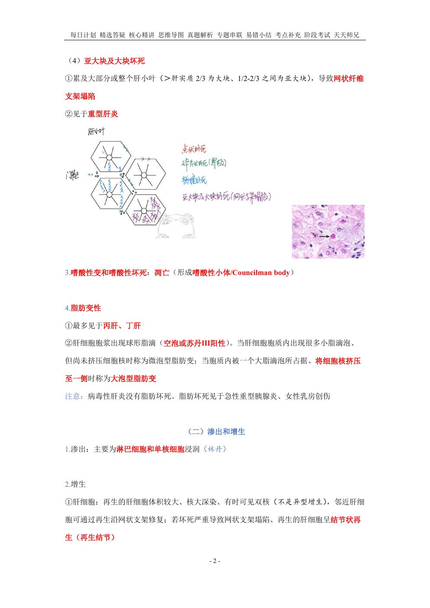
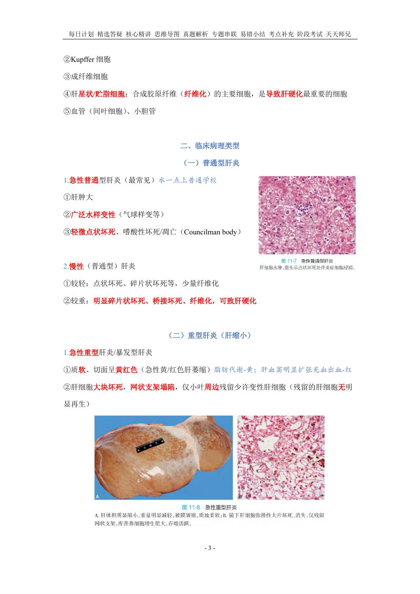
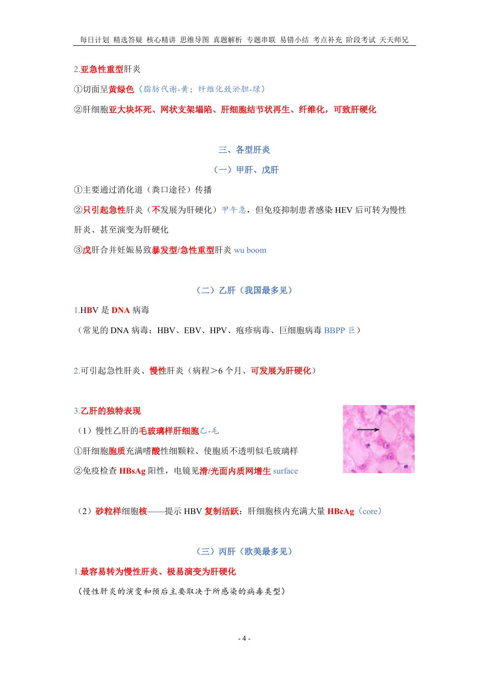
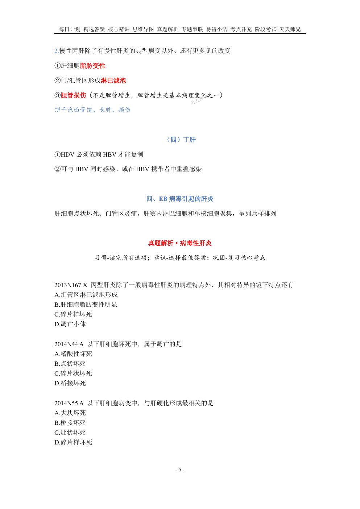
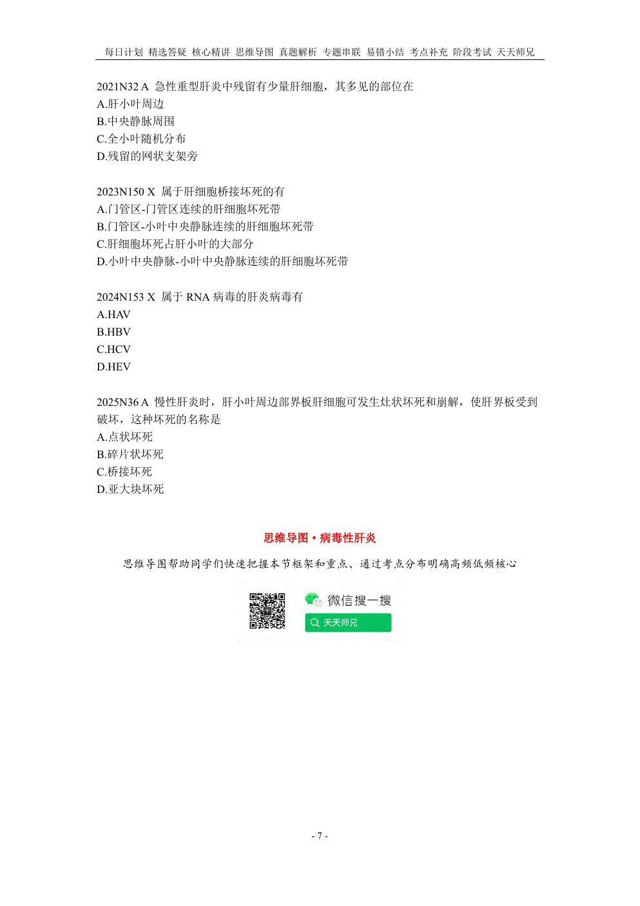